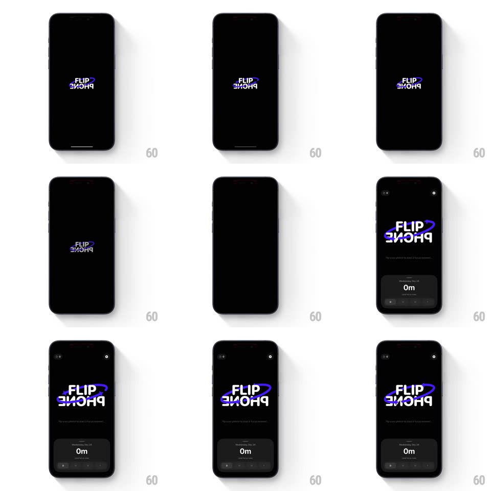

Media
Frame-by-frame

Rebuild this animation 1:1: Flip Phone's launch - the FLIP PHONE wordmark spins through a mirrored 3D flip on the black splash while scaling up, then the home screen fades and slides in around it.

Rebuild this animation 1:1: Flip Phone's launch - the FLIP PHONE wordmark spins through a mirrored 3D flip on the black splash while scaling up, then the home screen fades and slides in around it. ## Integration Integration: stack-agnostic spec - springs given as stiffness/damping, timed motions as duration + curve; map every value to your framework and animation library of choice. ## Scene Splash: a black screen holding the small centered FLIP PHONE wordmark (white text with the purple orbit glyph). Home: a dark screen with the large FLIP PHONE wordmark at top, a "Total focus time" card reading "0m", and a bottom tab bar - all revealed around the logo's final position. ## Motion spec Pattern: splash logo 3D flip with scale-up into the home reveal. - The wordmark spins on its horizontal axis (rotateX 0 -> 360deg, 700ms, ease-in-out), passing through the mirrored/edge-on states - the "flip" is literal, text legibly upside down and mirrored mid-spin. - Through the spin the logo scales up (0.6 -> 1.8) toward its home position, the scale easing out as the rotation completes. - As the flip lands, the home UI materializes around it: the focus-time card slides up from the bottom (translateY 40 -> 0, spring ~320/20, ~400ms), the tab bar fades up (250ms, 100ms later), the "0m" counts a settle beat. - The background stays pure black splash-to-home - the transition is the logo's, not the screen's. - Total launch sequence under 1.4s; the logo never disappears between splash and home. ## Calibration - The mirrored frames must read as mirrored type, not a blur - keep the spin crisp with perspective (~800px) so the 3D reads. - The logo's home scale lands once - no secondary bounce after the flip completes. ## Reduced motion Cross-fade the wordmark from small to home size (300ms); home UI fades in without slides. ## Don't miss - The purple orbit glyph stays glued to the wordmark through the flip - it does not lag or lead. - The "0m" empty state is the real home - no demo numbers on first launch.